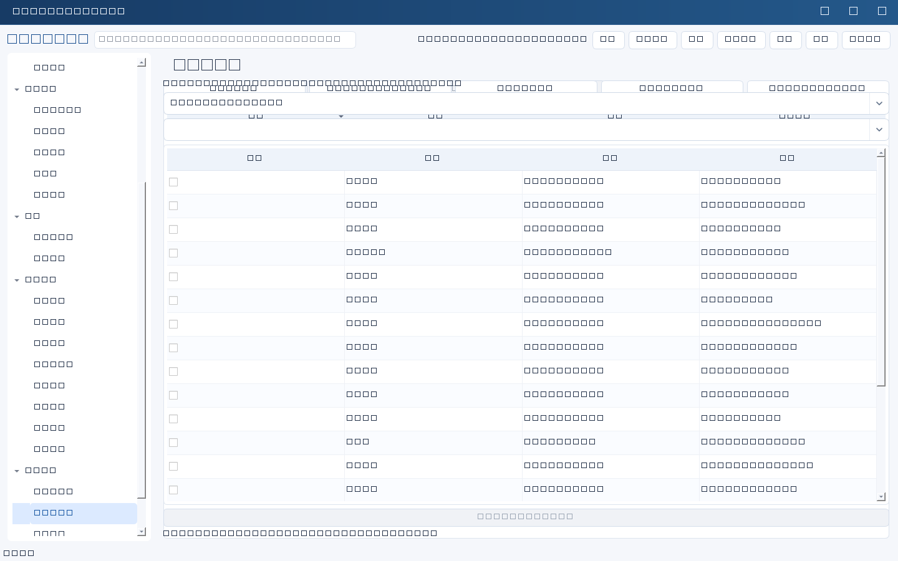
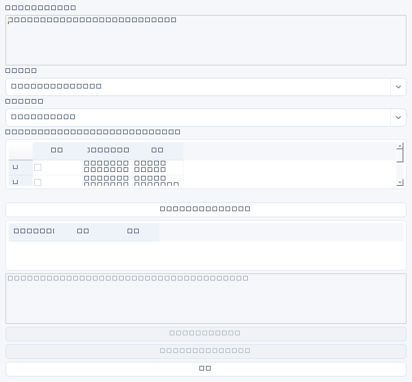

新建表单内AI辅助填写
- 进入任一业务模块，点击新建，再点击顶部“AI辅助填写”。例如输入“下月底完成公司电脑资产盘点，输出差异报告”。
- 选择已启用模型和对应模块填表模板；可选勾最多30条关联资料，默认不勾选。需要真实负责人/项目时选择人员或项目记录，或先在来源表单填写。
- 预览基础描述、当前表单和选定材料，确认允许发送及可能的费用。人员、考核、权限需要二次授权。
- 结果按字段展示原值与建议，默认只勾空字段。核实日期、预算等假设后点击应用；覆盖已有值会再次确认。
- 关闭辅助窗口后继续检查原表单，再点击保存。填入不等于保存，不会自动发送消息或创建其他管理记录。
覆盖19个业务模块：规划、项目、任务、人员、考核及运营治理台账。配置类表单不由AI生成密钥/授权。管理检查点、风险与后续行动会出现在建议区，可复制后人工建立关联任务。审批、证据、评分、评价和完成事实受到保护；未知关联或人员不自动编造。生成失败保留输入，生成期间不能重复请求。
模块填表提示词管理
系统设置→提示词库，按模块筛选。用途draft表示通用草稿，form_fill表示结构化填表；指定业务模块、启用状态及是否默认。每个模块预置专用模板，升级只补缺失模板，不覆盖已编辑模板。复制模板后修改并设为该模块默认；历史版本仍可查看。填表专用变量为basis（基础描述）、current（当前值）、context（选定资料）、schema（允许字段）、today（服务端日期）。输出必须为JSON对象：fields为字段名到文本的映射，suggestions/warnings为文本列表。字段需严格使用模块定义；错误JSON不会直接填入。填表模板与通用content/records模板不能混用。
模型配置
“模型配置”可“添加默认模板”或新建。平台、模型、官方HTTPS地址、API密钥引用、温度、输出上限、超时和启用状态均需核对。选择不同平台时界面显示对应建议；点击“应用此平台默认值”可更新模型、地址及密钥引用，不会因切换平台静默覆盖已有输入。
| 平台 | 默认地址 / 模型 / 引用 |
|---|---|
| deepseek | https://api.deepseek.com/v1 deepseek-chat / DEEPSEEK_API_KEY |
| kimi | https://api.moonshot.cn/v1 moonshot-v1-8k / MOONSHOT_API_KEY |
| qwen | https://dashscope.aliyuncs.com/compatible-mode/v1 qwen-plus / DASHSCOPE_API_KEY |
地域允许Kimi的api.moonshot.ai，以及Qwen的dashscope-intl.aliyuncs.com、dashscope-us.aliyuncs.com；按账号地域使用官方兼容路径。地址只能HTTPS官方域名，不支持任意代理模型站点。默认模型只是建议，不保证当前账号可用。
temperature范围0—2，默认0.7；max_tokens正整数，默认2048；timeout大于0且不超过120秒，默认60。没有流式输出、工具调用或自动重试。“测试连接”会实际调用模型并可能收费。
提示词变量与版本
“提示词库”支持分类、模板、系统约束、启停、历史版本与复制为新提示词。保存已有提示词产生版本历史，复制不等于覆盖原版。内置周报、任务拆解、会议纪要、风险分析、考核证据摘要、邮件草稿。
请整理 {{content}}
要求：{{focus}}
选定记录：{{records}}仅支持 {{identifier}}，标识符由英文字母/下划线开头，后续可含数字；不支持表达式、Python或递归模板。content与records由选定记录注入，额外变量由界面询问。变量缺失会失败；不要在模板中写真实密钥。
实际操作
- “AI工作室”选择启用模型与提示词，勾选1—100条记录。
- 预览完整选定记录，确认字段范围和外发政策；当前按整条记录发送，不能假定已自动脱敏。
- 涉及人员、考核、权限时二次确认，补充自定义变量。
- 生成结果进入草稿编辑器；人工核实事实、出处、数字、敏感信息，再批准或复制为业务记录。
AI任务拆解不会未经确认建立正式任务；辅助填表建议区支持选择并编辑建议后确认建立任务。调用记录包含模型、提示词版本、状态、用量及选定ID，不额外记录原始请求正文；草稿正文仍保存在数据库。失败不改变原业务记录。等待期间不要把关闭客户端或网络超时当作上游停止计费。



